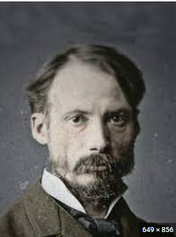
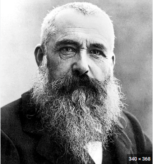
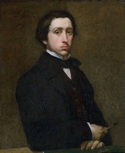
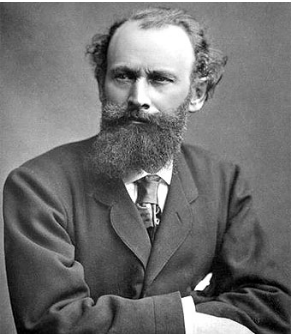

auguste renoir: Comienza captando temas de la vida amable de diversiones en los que refleja las vibraciones de la luz (Le moulin de la Galette) o desnudos en los que estudia los efectos de luz y sombra en las carnaciones. Después de un viaje a Italia se obsesiona por el dibujo abandonando parcialmente el impresionismo.

claude monet : Es el impresionista por excelencia. Se interesa sobre todo por el paisaje y la incidencia de la luz a diferentes horas. Capta la vibración lumínica mediante pequeños y rápidos toques de colores puros que dan aspecto inacabado a sus obras desde cerca, pero que se funden a determinada distancia. Es amante de representar los efectos de la niebla, el humo, los reflejos de las aguas o la luz solar. A veces realiza series de un motivo a diferentes horas o estaciones del año: Catedral de Rouen, Estación Saint Lazare, o las series de Nenúfares efectuadas al final de su vida. A él se debe el título de la obra que dio pié a la denominación de impresionistas para el grupo: Impresión. Sol naciente.

edgar degas: Es un impresionista de la forma más que del color (utiliza el negro). Introduce temas nuevos en los que aparece el movimiento (carreras de caballos, bailarinas). No se limita al mundo elegante sino que pinta también el cansancio (Planchadoras) o escenas íntimas de mujeres (Toilette).

edouar manet: Más que un impresionista es un precursor, un símbolo del antiacademicismo. Su formación es clásica, con influencias de Tiziano, Velázquez o Goya, aunque concibe sus obras con un sentido muy moderno del color y del dibujo a base de grandes manchas de colores planos aplicados con una pincelada suelta. Dentro de su obra destacan temas con referentes clásicos pero contextualizados en su época: El almuerzo campestre, inspirado en una obra veneciana del siglo XVI, o la Olimpia, inspirada en la Venus de Urbino de Tiziano.